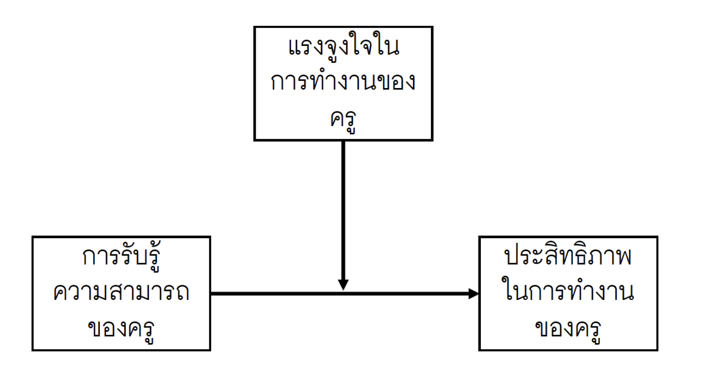

Regression เป็นวิธีการทางสถิติที่ใช้วิเคราะห์ความสัมพันธ์ระหว่างตัวแปรตาม (Dependent Variable) และตัวแปรอิสระ (Independent Variables) หนึ่งตัวหรือมากกว่า ซึ่งจะช่วยให้เราเข้าใจว่าตัวแปรตามมีการเปลี่ยนแปลงอย่างไรเมื่อมีการเปลี่ยนแปลงในตัวแปรอิสระ
วัตถุประสงค์ของการวิเคราะห์ regression หลัก ๆ มี 2 ข้อ
คือการสร้างโมเดลทางสถิติที่สามารถใช้
อธิบายความสัมพันธ์ระหว่างตัวแปรตามกับตัวแปรอิสระ
ทำนายแนวโน้มของตัวแปรตามเมื่อกำหนดตัวแปรอิสระ
การวิเคราะห์การถดถอยมีหลายประเภท
Simple regression
Multiple regression
Polynomial regression
Logistic regression
…
Simple Linear Regression
เป็นโมเดลพื้นฐานใช้อธิบายความสัมพันธ์ระหว่างตัวแปรตามกับตัวแปรอิสระที่เป็นตัวแปรเดียว ทางสังคมศาสตร์อาจไม่ค่อยใช้โมเดลนี้ในทางปฏิบัติเท่าไหร่ แต่มักใช้เป็นโมเดลแรกในการอธิบาย concept เกี่ยวกับ regression
อย่างที่บอกว่า regression analysis จะทำการอธิบายและทำนายตัวแปรตามด้วยตัวแปรอิสระ ผ่านโมเดลทางสถิติ สำหรับ simple regression หรือเรียกเต็ม ๆ ว่า simple linear regression จะมีโมเดลเป็นสมการเส้นตรงที่มีส่วนประกอบจำแนกเป็นสองส่วนได้แก่
\[
Y_i = \beta_0 + \beta_1X_i + \epsilon_i
\]
library (tidyverse)<- read_csv ("/Users/choat/Downloads/exam.csv" )glimpse (data)
Rows: 387
Columns: 5
$ ach <dbl> 52.159780, 30.784999, 39.607737, 55.985351, 31.80…
$ learning_performance <dbl> 32.666667, 10.666667, 28.000000, 52.666667, 15.55…
$ ontime_class <chr> "used to late", "used to late", "never late", "us…
$ engage <chr> "no engage", "much engage", "much engage", "much …
$ practice <chr> "do practice", "do not praction", "do not practio…
<- lm (ach ~ learning_performance, data = data)summary (fit_simreg)
Call:
lm(formula = ach ~ learning_performance, data = data)
Residuals:
Min 1Q Median 3Q Max
-29.1638 -5.8006 0.6043 6.8305 23.2356
Coefficients:
Estimate Std. Error t value Pr(>|t|)
(Intercept) 17.70386 0.95723 18.5 <2e-16 ***
learning_performance 0.56536 0.01818 31.1 <2e-16 ***
---
Signif. codes: 0 '***' 0.001 '**' 0.01 '*' 0.05 '.' 0.1 ' ' 1
Residual standard error: 9.277 on 385 degrees of freedom
Multiple R-squared: 0.7152, Adjusted R-squared: 0.7145
F-statistic: 966.9 on 1 and 385 DF, p-value: < 2.2e-16
Multiple Regression
<- lm (ach ~ learning_performance + engage, data = data)summary (fit_mulreg)
Call:
lm(formula = ach ~ learning_performance + engage, data = data)
Residuals:
Min 1Q Median 3Q Max
-27.6449 -5.9326 0.4239 6.4016 24.7260
Coefficients:
Estimate Std. Error t value Pr(>|t|)
(Intercept) 16.27171 1.26921 12.820 <2e-16 ***
learning_performance 0.55225 0.01961 28.164 <2e-16 ***
engagemoderate engage 1.84006 1.54118 1.194 0.2332
engagemuch engage 2.73175 1.38438 1.973 0.0492 *
engageno engage 2.21254 2.20469 1.004 0.3162
---
Signif. codes: 0 '***' 0.001 '**' 0.01 '*' 0.05 '.' 0.1 ' ' 1
Residual standard error: 9.265 on 382 degrees of freedom
Multiple R-squared: 0.7181, Adjusted R-squared: 0.7152
F-statistic: 243.3 on 4 and 382 DF, p-value: < 2.2e-16
Regression with Interaction
อิทธิพลปฏิสัมพันธ์ (interaction effect) คืออิทธิพลรวมกันระหว่างตัวแปรอิสระอย่างน้อย 2 ตัวแปร ที่มีผลต่อตัวแปรตาม ที่เมื่อเกิดอิทธิพลของตัวแปรอิสระดังกล่าวจะมีแนวโน้มเปลี่ยนแปลงไปตามค่าของตัวแปรอิสระอื่น ๆ ที่อยู่ในกลุ่มปฏิสัมพันธ์เดียวกัน
Two-way interaction effect
ตัวแปรอิสระทั้งสองเป็นตัวแปรจัดประเภท
ตัวแปรอิสระเป็นตัวแปรจัดประเภทและตัวแปรอิสระเชิงปริมาณ
ตัวแปรอิสระทั้งสองเป็นตัวแปรเชิงปริมาณ
ตัวแปรอิสระเป็นตัวแปรจัดประเภทและตัวแปรอิสระเชิงปริมาณ
ใช้ชุดข้อมูล teachersalary.csv
<- read_csv ("TeacherSalaryData.csv" )<- lm (salary~ yrs.service + yrs.service: discipline, data = data)summary (fit_interac1)
Call:
lm(formula = salary ~ yrs.service + yrs.service:discipline, data = data)
Residuals:
Min 1Q Median 3Q Max
-86613 -19868 -4948 15991 101894
Coefficients:
Estimate Std. Error t value Pr(>|t|)
(Intercept) 98537.8 2339.7 42.12 < 2e-16 ***
yrs.service 509.8 116.4 4.38 1.52e-05 ***
yrs.service:disciplineB 726.6 127.7 5.69 2.48e-08 ***
---
Signif. codes: 0 '***' 0.001 '**' 0.01 '*' 0.05 '.' 0.1 ' ' 1
Residual standard error: 27510 on 394 degrees of freedom
Multiple R-squared: 0.1795, Adjusted R-squared: 0.1753
F-statistic: 43.09 on 2 and 394 DF, p-value: < 2.2e-16
การวิเคราะห์ simple slope ของ yrs.service จำแนกตาม discipline
library (emmeans)<- emtrends (fit_interac1, var = "yrs.service" , spec = "discipline" )## slope ของ yrs.service จำแนกตาม discipline
discipline yrs.service.trend SE df lower.CL upper.CL
A 510 116 394 281 739
B 1236 133 394 974 1498
Confidence level used: 0.95
## ความแตกต่างของ slope ของ yrs.service ระหว่าง 2 discipline contrast (simple_slopes, method = "pairwise" )
contrast estimate SE df t.ratio p.value
A - B -727 128 394 -5.690 <.0001
ลองใช้ simple_slopes <- emmeans(fit_interac1, pairwise ~ discipline | yrs.service) ผลลัพธ์ที่ได้แตกต่างกันอย่างไร
ในทำนองเดียวกับ anova เราสามารถวิเคราะห์ simple effect ของ discipline แต่ในกรณีนี้จะเป็นการจำแนกตามระดับของ yrs.service ซึ่งมีจำนวนได้มากมาย
...1 rank discipline yrs.since.phd
Min. : 1 Length:397 Length:397 Min. : 1.00
1st Qu.:100 Class :character Class :character 1st Qu.:12.00
Median :199 Mode :character Mode :character Median :21.00
Mean :199 Mean :22.31
3rd Qu.:298 3rd Qu.:32.00
Max. :397 Max. :56.00
yrs.service sex salary
Min. : 0.00 Length:397 Min. : 57800
1st Qu.: 7.00 Class :character 1st Qu.: 91000
Median :16.00 Mode :character Median :107300
Mean :17.61 Mean :113706
3rd Qu.:27.00 3rd Qu.:134185
Max. :60.00 Max. :231545
<- emmeans (fit_interac1, pairwise ~ discipline | yrs.service, at = list (discipline = c ("A" , "B" ), yrs.service = c (7 , 16 ,27 )))$ emmeans %>% data.frame () %>% ggplot (aes (x= emmean, y= factor (yrs.service), col = discipline ))+ geom_point ()+ geom_errorbar (aes (xmin = lower.CL, xmax = upper.CL), width = 0.1 )
เราอาจ plot แผนภาพแสดงความสัมพันธ์แบบ interaction ได้ง่าย ๆ ดังนี้
<- seq (min (data$ yrs.service), max (data$ yrs.service), 2 )<- expand_grid (yrs.service = yrs_grid,discipline = unique (data$ discipline))%>% mutate (pred = predict (fit_interac1, newdata = grid_pred)) %>% ggplot (aes (x = yrs.service, y = pred, color = discipline)) + geom_line ()
ตัวแปรอิสระทั้งสองเป็นตัวแปรเชิงปริมาณ

<- read_csv ("eff.csv" )glimpse (data)
Rows: 100
Columns: 4
$ id <dbl> 1, 2, 3, 4, 5, 6, 7, 8, 9, 10, 11, 12, 13, 14, 15, 16, 17, 18, 1…
$ seef <dbl> 5.7599470, 3.7773884, 5.4455399, 13.5313592, 9.4946747, 2.341611…
$ motiv <dbl> 5.472301, 3.966361, 4.874800, 5.928663, 5.868340, 4.150825, 4.61…
$ eff <dbl> 39, 28, 41, 40, 38, 31, 20, 33, 42, 61, 33, 33, 24, 23, 41, 47, …
Polynomial Regression
library (gapminder)library (ggforce)%>% filter (year== "2007" ) %>% ggplot (aes (x = gdpPercap, y= lifeExp))+ geom_point ()+ geom_smooth ()
การสร้าง term polynomial อาจทำได้สองวิธีการ วิธีการแรกคือการใช้ฟังก์ชัน identity function (I()) และวิธีการที่สองคือการใช้ poly() ความแตกต่างระหว่างการสร้างเทอมพหุนามของทั้งสองวิธีการคือ
I() เป็นวิธีการสร้างพหุนามโดยตรง โดยเราจะใส่ตัวแปรที่ต้องการยกกำลังในฟังก์ชันนี้ ตัวอย่างเช่น I(x^2) หมายถึงการสร้างเทอม x^2 ที่ใช้ในโมเดลการถดถอย ดังนั้นการแปลความหมาย slope ของตัวแปรที่เป็นพหุนามนี้สามารถทำได้อย่างตรงไปตรงมา เพราะตัวแปรต่าง ๆ อยู่ในสเกลต้นฉบับ
ปัญหาหนึ่งของการใช้ I() คือ multicollinearity!!!
poly() จะสร้างเทอมพหุนามที่เรียกว่า orthogonal polynomial ซึ่งจะทำให้เราไม่ต้องกังวลเรื่อง multicollinearity แต่ต้องแลกมาด้วยการแปลความหมายความสัมพันธ์ที่ยาก เพราะตัวแปรที่ถูกแปลงเป็น orthogonal polynomial จะอยู่คนละสเกลกับตัวแปรเดิม การแปลงลักษณะนี้จึงเหมาะกับวัตถุประสงค์ในการทำนายมากกว่าอธิบายความสัมพันธ์ื
Regression Diagnostics
regression เป็นโมเดลทางสถิติแบบ parametric ที่การใช้งานจะต้องอยู่ภายใต้ข้อตกลงเบื้องต้นของโมเดลที่ค่อนข้าง strict (แต่ก็ไม่ได้แปลว่าต้อง strict มาก ๆ )
Independence
Linearity
Normality
Homoscedasticity
No Missing Values
No Influential Outlier
Outlier คือ ค่าสังเกตที่ทำนายไม่ได้หรือมีประสิทธิภาพการทำนายด้วย regression ต่ำ (กล่าวคือมีค่าสัมบูรณ์ของ residual ที่มากเกินไป)
%>% filter (year== "2007" ) %>% ggplot (aes (x = gdpPercap, y= lifeExp))+ geom_point ()+ geom_smooth ()+ geom_ellipse (data = gapminder %>% filter (year== "2007" ) %>% filter (lifeExp < 60 & gdpPercap > 8000 ),aes (x0 = mean (gdpPercap), y0 = mean (lifeExp), a = 2 * sd (gdpPercap), b = 2 * sd (lifeExp), angle = 0 ),color = 'maroon' , linetype = "dashed" , fill = NA )
Leverage value คือ combination ของค่าสังเกตของตัวแปรอิสระที่ผิดปกติ กล่าวคือเป็น outlier ใน feature space ค่า leverage ไม่จำเป็นต้องมีผลต่อค่าของเส้นถดถอยเสมอไป มันเพียงแค่บอกว่าจุดนั้นอยู่ห่างไกลและมีศักยภาพที่จะส่งผลกระทบต่อโมเดล
\[
h_{ii} = x_i^T (X^T X)^{-1} x_i
\] ค่า \(h_{ii}\) มีค่าอยู่ในช่วง [0,1] ถ้ามีค่าใกล้ 1.0 แสดงว่าค่าสังเกตของตัวแปรอิสระนั้นมีแนวโน้มอยู่ใกล้จากแนวโน้มส่วนใหญ่
Influential observation คือค่าสังเกตที่มีอิทธิพลต่อการประมาณค่าพารามิเตอร์ในโมเดลมากกว่าปกติ การประเมินค่าสังเกตประเภทนี้ทำได้ด้วยสถิติ Cook’s distance
\[
D_i = \frac{(e_i^2)}{p \cdot MSE} \left( \frac{h_{ii}}{(1 - h_{ii})^2} \right)
\]
library (patchwork)<- gapminder %>% filter (year== "2007" ) %>% ggplot (aes (x = gdpPercap, y= lifeExp))+ geom_point ()+ geom_smooth ()<- gapminder %>% filter (year== "2007" ) %>% filter (gdpPercap < 10000 ) %>% ggplot (aes (x = gdpPercap, y= lifeExp))+ geom_point ()+ geom_smooth ()/ p2
Model Selection: Best Subset Regression
วิธีการหนึ่งที่ใช้ค้นหาโมเดลที่ดีที่สุดคือ best subset regression ซึ่งจะทำการสร้างโมเดลทุกโมเดลที่เป็นไปได้จากตัวแปรอิสระที่มี จากนั้นเปรียบเทียบ empirical fit ระหว่างโมเดลดังกล่าว
#install.packages("leaps") library (leaps)<- read_csv ("TeacherSalaryData.csv" )<- regsubsets (salary ~ ., data= data %>% select (- 1 ), nbest = 2 , nvmax = 6 )summary (reg_model)
Subset selection object
Call: regsubsets.formula(salary ~ ., data = data %>% select(-1), nbest = 2,
nvmax = 6)
6 Variables (and intercept)
Forced in Forced out
rankAsstProf FALSE FALSE
rankProf FALSE FALSE
disciplineB FALSE FALSE
yrs.since.phd FALSE FALSE
yrs.service FALSE FALSE
sexMale FALSE FALSE
2 subsets of each size up to 6
Selection Algorithm: exhaustive
rankAsstProf rankProf disciplineB yrs.since.phd yrs.service sexMale
1 ( 1 ) " " "*" " " " " " " " "
1 ( 2 ) "*" " " " " " " " " " "
2 ( 1 ) " " "*" "*" " " " " " "
2 ( 2 ) "*" "*" " " " " " " " "
3 ( 1 ) "*" "*" "*" " " " " " "
3 ( 2 ) " " "*" "*" "*" " " " "
4 ( 1 ) "*" "*" "*" " " " " "*"
4 ( 2 ) "*" "*" "*" " " "*" " "
5 ( 1 ) "*" "*" "*" "*" "*" " "
5 ( 2 ) "*" "*" "*" " " "*" "*"
6 ( 1 ) "*" "*" "*" "*" "*" "*"